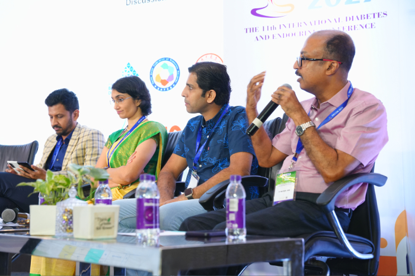
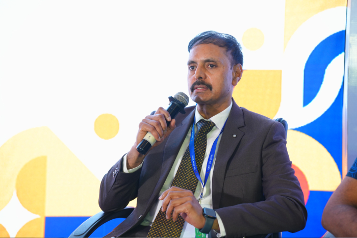
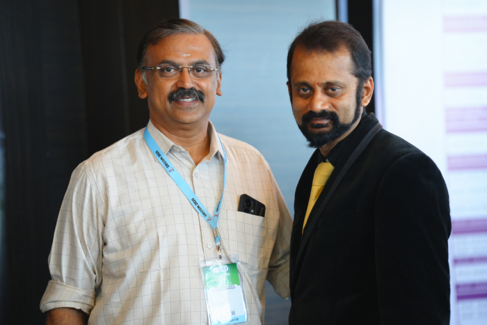
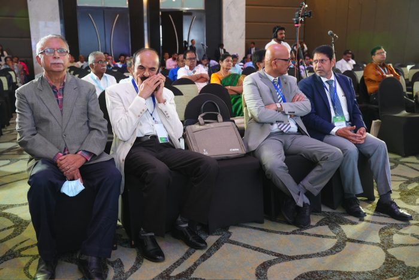

Diabetes, lived and managed
From clinical updates to the complexity of everyday care.
Where medicine meets meaningful exchange.
The DECON forum
Since 2014
DECON began as the Diabetes Summit and has evolved into an international clinical forum grounded in exchange: evidence considered, cases debated and perspectives shared.
The 2027 edition will bring that spirit back to Coimbatore, with a programme shaped for clinicians across diabetes, endocrinology, maternal medicine and connected specialties.

“A forum for evidence, dialogue and clinical practice.”DECON 2027 concept direction
Inside the programme
Final session names, faculty and timings will be published after scientific committee approval.
From clinical updates to the complexity of everyday care.
Reasoning, diagnostics and management across endocrine disorders.
Cardiovascular, infectious, maternal and internal medicine in conversation.
Oral and poster opportunities, subject to the approved 2027 call.

The people in the room
DECON’s faculty and delegates bring complementary views from endocrinology, diabetology, internal medicine and allied fields. The 2027 faculty is still being curated.



Destination: Coimbatore
Coimbatore sits at the edge of the Western Ghats and connects delegates by air, rail and road. Confirmed venue, travel and accommodation information will appear here for 2027.
The next chapter
Be ready for the dates, programme, faculty, abstracts and registration announcements. The official update service will be connected after communications approval.